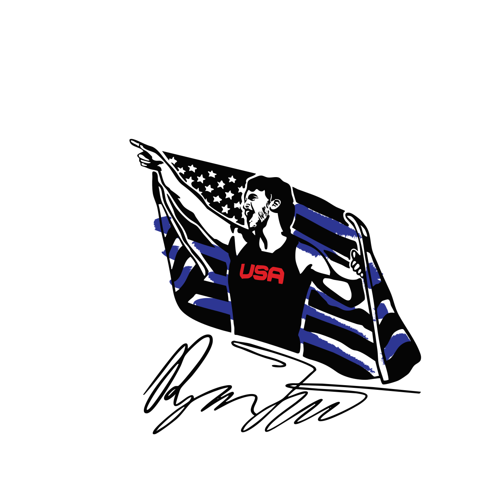
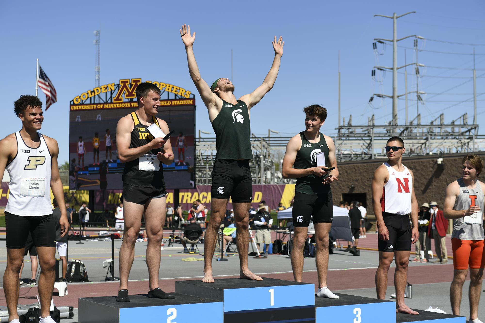

 RYAN TALBOT
83
DECATHLON
440
DISCUS THROW
750
SHOT PUT
841
110M HURDLES
1066
400M
2339
100M

Bio
Ryan Talbot is an accomplished decathlete and coach, known for his record-breaking performances and dedication to the sport. He has represented his university and country at major competitions, inspiring athletes of all levels.

Track and Field events date back to the ancient Olympic Games in Greece.

The decathlon consists of 10 events.

Ryan set the MSU decathlon record in 2022.

Ryan competed in the NCAA Championships, finishing in the top 10 nationally.

Off the track, Ryan mentors young athletes and promotes sportsmanship in his community.
Competitions
- 100 m: 10.60 s
- Long jump: 7.06 m
- Shot put: 15.14 m
- High jump: 1.91 m
- 400 m: 47.52 s
- 110 m H: 14.74 s
- Discus: 50.90 m
- Pole vault: 5.20 m
- 1500 m: 4:33.50
- Big Ten Champs – MSU, 8064 pts
- Pan-Am Games, 7742 pts
- U.S. Trials, 7872 pts
- Jim Click Shootout, 7677 pts
- Big Ten Outdoor, 7786 pts
Diet

Fueling Performance
Ryan follows a "carnivore diet" to maintain peak physical condition. This diet focuses on high-protein, low-carb foods to support his intense training regimen and recovery.
- Breakfast: ...
- Lunch: ...
- Dinner: ...
- Snacks: ...
Socials & Coaching
Follow Ryan
Coaching & Mentorship
Ryan offers coaching sessions for aspiring decathletes and track athletes. Get in touch for personalized training plans, technique analysis, and mentorship.
Contact Ryan